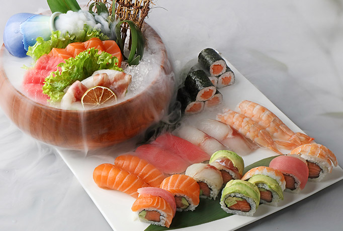
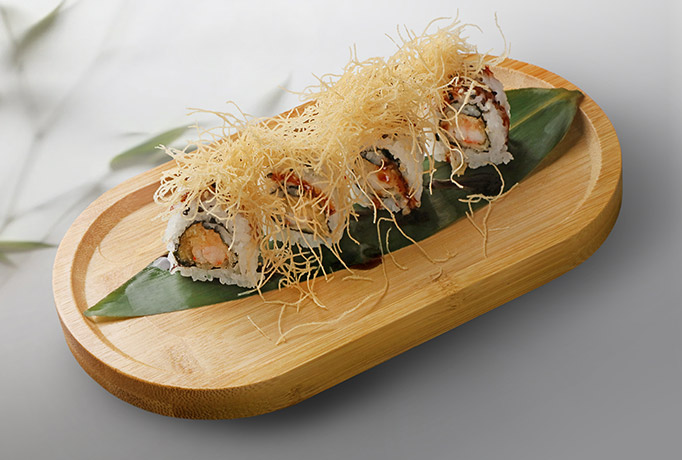

Vékonyra szelt, nyers prémium hal – a tiszta íz, rizs nélkül.
Új üzlet a Szent István-bazilika mellett
Korlátlan prémium sushi,
a Bazilika árnyékában.
I Rólunk
Kizárólag Olaszországból érkező, prémium friss tengeri alapanyagok – autentikus japán kézművességgel, a sushi lakomák csúcsán.

Üdvözöljük az Art of Sushi-ban – fedezze fel a sushi lakomák csúcsát! Alapanyagainkat autentikus japán konyhaművészettel dolgozzuk fel, hogy a legkiválóbb ízeket nyújtsuk Önnek.
Legyen szó klasszikus sushiról, sashimiról vagy kreatív japán fogásokról, széles választékunk garantáltan minden ízlést kielégít.
芸術
II Étlap
Fedezze fel friss, kiváló minőségű alapanyagokból gondosan elkészített sushi- és ázsiai ételeinket.
Vékonyra szelt, nyers prémium hal – a tiszta íz, rizs nélkül.

Nigiri, maki és látványos tekercsek, frissen a pult mögül.

Könnyű, ízgazdag kezdés a lakoma előtt.

Forró wokban pirított tészták és ázsiai fogások.
III Séf ajánlata
Éttermünk legkedveltebb fogásai, amelyeket séfünk gondosan válogatott és tökéletesre alkotott – friss, ízletes és mindig a legjobb minőségben tálalva.

Különféle japán rizses ételeket kínálunk, friss alapanyagokból, eredeti ízekkel.

Változatos, látványos sushi tekercsek – friss alapanyagokból, tökéletes ízharmóniával.
IV Galéria
Várjuk szeretettel
FoglaljonV Árak
Felnőtt ár személyenként
Az önkiszolgáló étkezés időtartama legfeljebb 2 óra.
Nem tartoznak a svédasztalos árba, külön rendelhetők és külön fizetendők.
15% szervizdíjat számolunk fel.

VI Foglalás
Gyors és ingyenes online foglalás néhány kattintással. Visszaigazolásunkat hamarosan megkapja.
Telefonos foglalás +36 30 516 1606VII Kapcsolat
Testvérüzletünk: Liszt Ferenc tér 5, 1061 · +36 30 689 2318 · artofsushi.hu
December 24-én 18:00-kor zárunk.